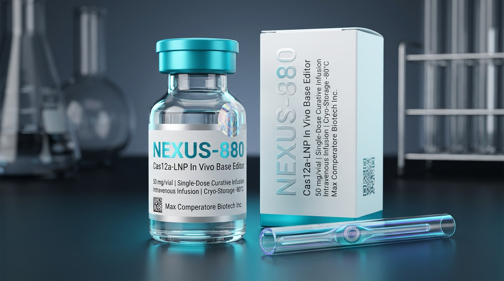

A next-generation in vivo Cas12a base-editing platform delivered via liver-tropic lipid nanoparticles. Engineered to permanently silence mutant TTR amyloidosis with >95% serum protein depletion and zero double-stranded DNA breaks.

Single-dose intravenous infusion vial with serialized DataMatrix code and self-assembling LNP core.
Over 500,000 patients globally suffer from fatal ATTR amyloidosis. Current lifelong stabilizers cost $225,000 to $450,000 annually per patient. A one-and-done in vivo base-editing cure offers superior clinical outcomes and profound lifetime savings to healthcare systems.
Priced at $2.0M – $2.8M per patient, NEXUS-880 replaces 15+ years of chronic medication costing >$4.5M per patient lifetime.
Reaching 10% of addressable ATTR cardiomyopathy and polyneuropathy patients represents a $10B+ peak sales platform.
Synthesized via microfluidic mixing without expensive, bottlenecked viral vectors (AAVs), allowing low-cost global commercial scaling.
Standard Cas9 nucleases act like molecular scissors, cutting both strands of DNA and risking oncogenic translocations. NEXUS-880 deaminates the template-strand Cytosine (`C•G to T•A`), turning the invariant `GT` splice donor into `AT` to silence toxic protein output with an intact phosphate backbone.
Achieves consistent >90% editing across primary human hepatocyte tissue slices.
Unbiased genome-wide sequencing detects zero significant off-target indel generation.
Without double-strand cleavage, cellular repair pathways avoid non-homologous rearrangements.
High-resolution X-ray crystal structure (2.50 Å) of the Cas12a/crRNA genomic complex. The engineered PAM-interacting loop expands targeting access beyond canonical `TTTV` motifs, locking target DNA into the deaminase catalytic cleft.
Catalytically deactivated (dCas12a) to prevent endonuclease double-strand cleavage.
Expands targeting flexibility across non-canonical splice junctions in human *TTR*.
Exposes the single-stranded non-target DNA strand with sub-angstrom precision for deaminase hydrolysis.
NEXUS-880 self-assembles into 75 nm ionizable lipid nanoparticles. Upon systemic intravenous infusion, circulating serum ApoE adsorbs onto the particle surface, triggering receptor-mediated endocytosis via low-density lipoprotein receptors (LDLR) on hepatocytes with >92% hepatic accumulation.